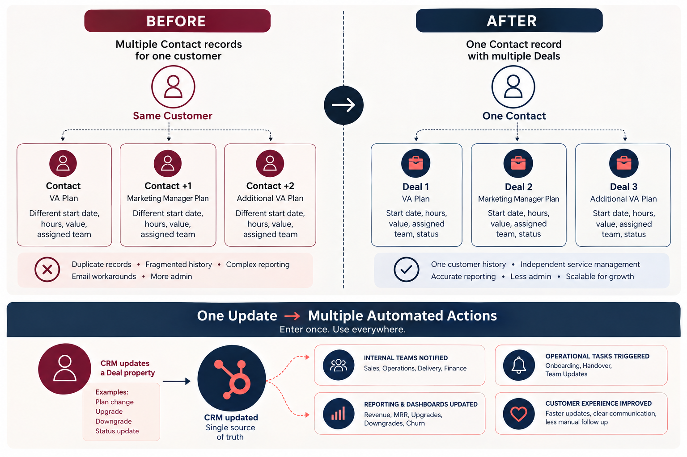

A HubSpot architecture redesign that moved operational tracking away from duplicated Contact records and into a Deal-based model built for repeat sales, onboarding and customer lifecycle visibility.
Sales and Client Services activity had been managed primarily through Contact records. A single real client with multiple service plans could end up represented by multiple Contact records, sometimes differentiated with plus-addressed email variations.
That created duplicate data, fragmented communication history, email deliverability issues and reporting limitations. Historical information existed, but not in a structure that made the customer journey easy to see or manage.
The Contact became the central customer identity, while each commercial plan or customer journey became a Deal.
This portfolio diagram summarises the architecture change and the automation model it enabled.

Solution diagram created to explain the redesign. It is a simplified representation of the operating model, not a screenshot of confidential production data.
The redesign was not simply a cleanup exercise; it changed how the business represented customers and commercial activity.